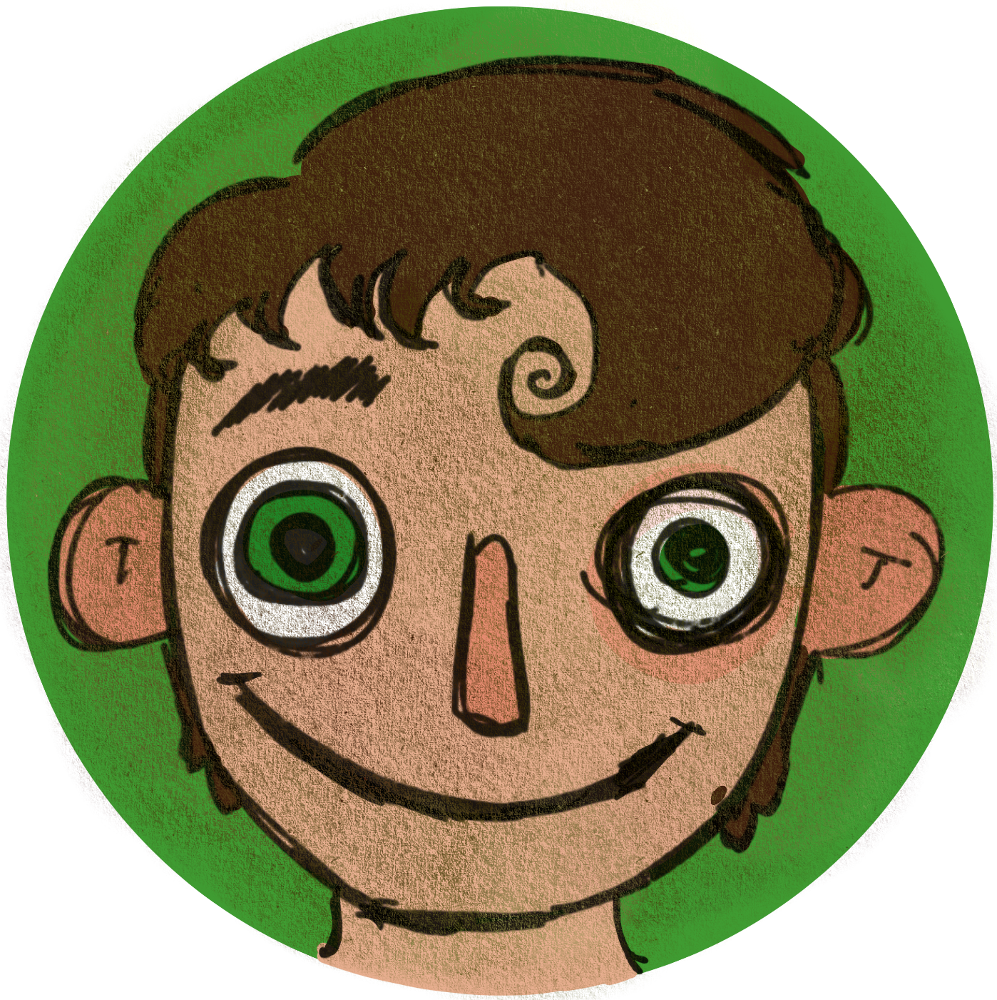
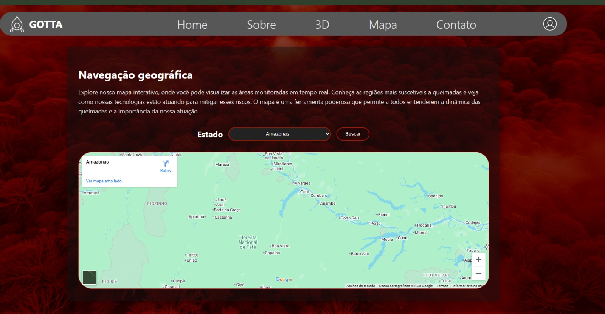
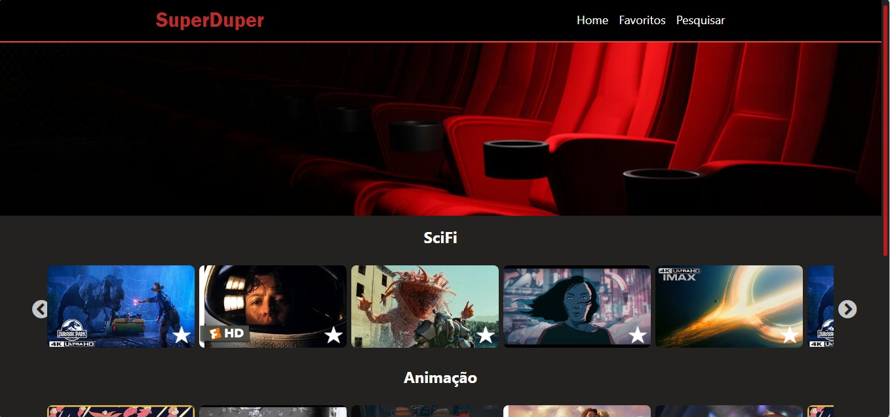
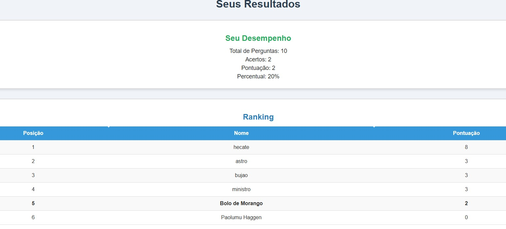
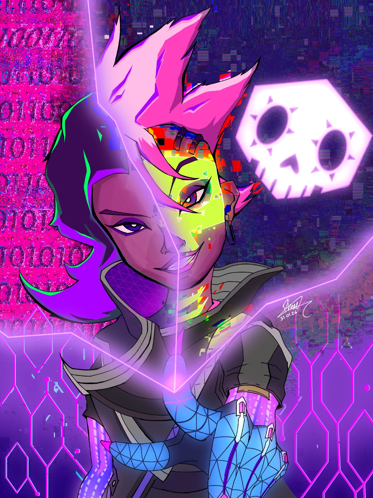
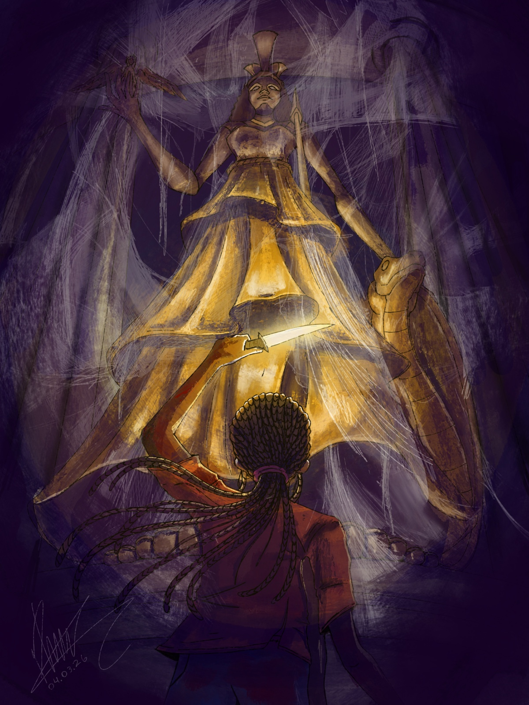
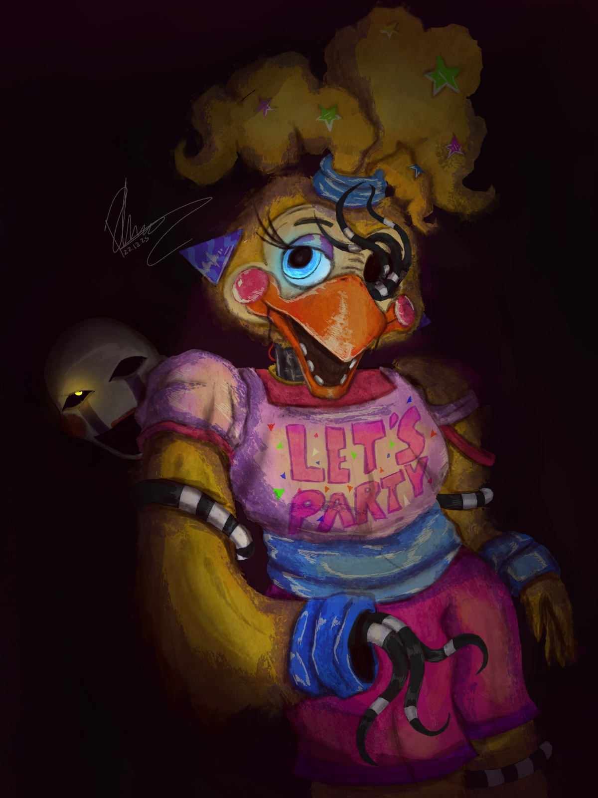
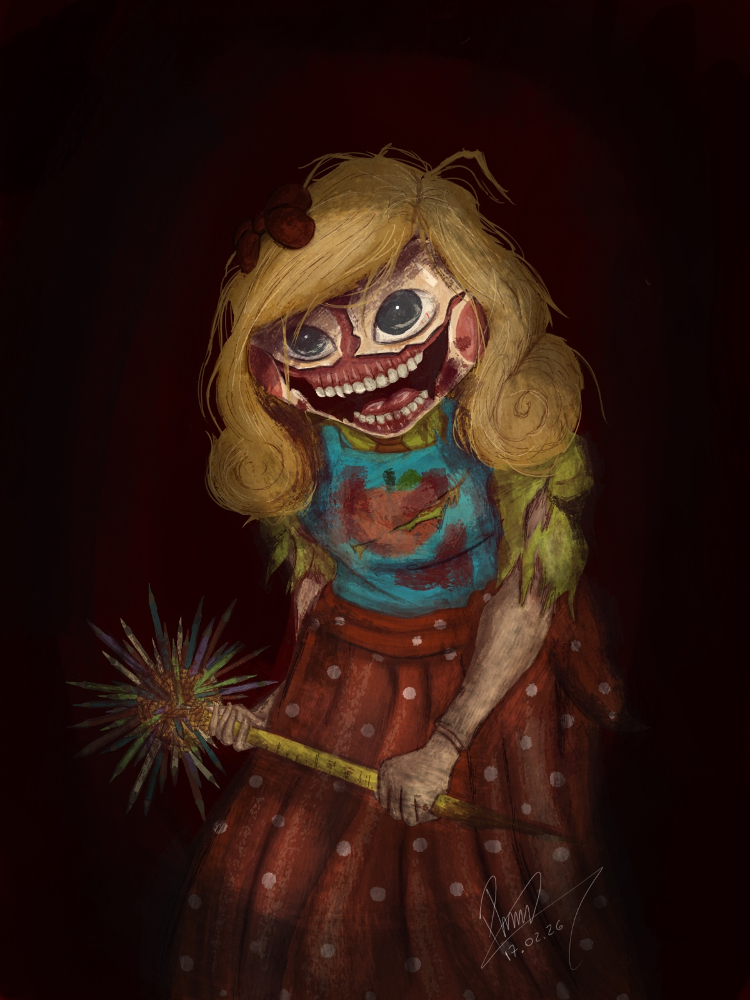
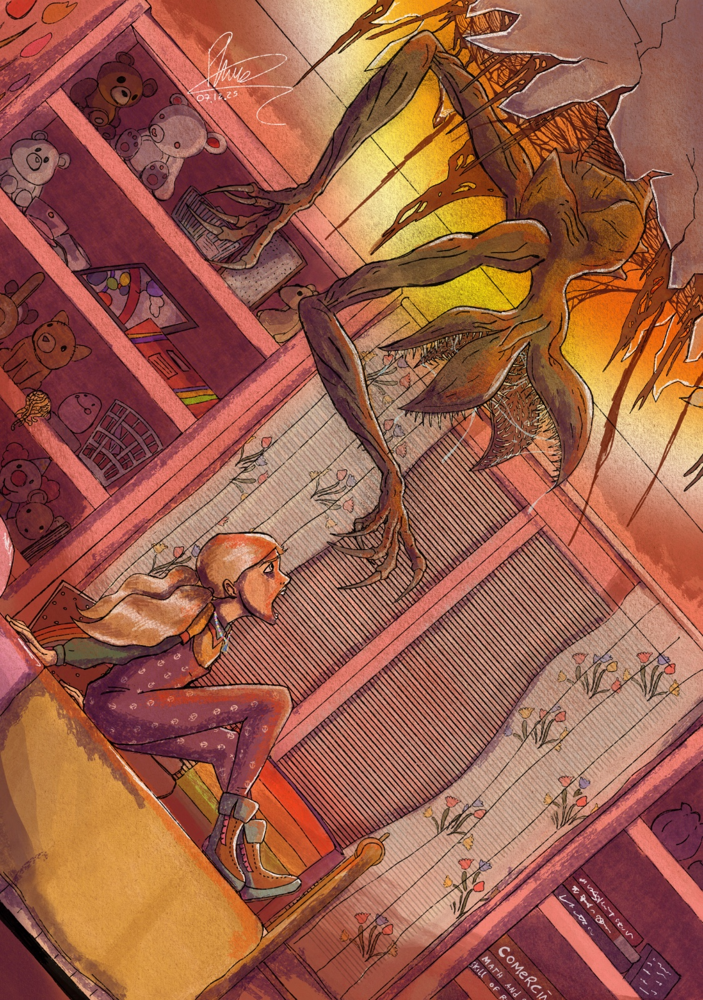
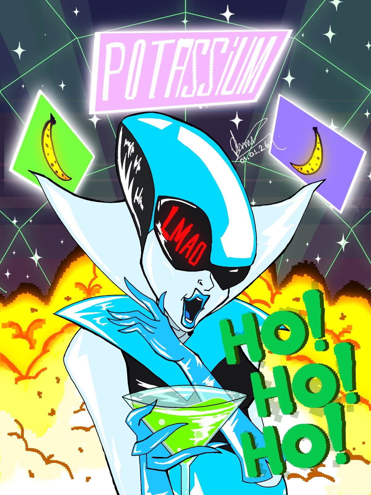

PORTFOLIO


Oi! Eu sou o Pedro!
Estudante de tecnologia e artes visuais
Esse portfólio, pelo contexto, será hibrído. Exibirei minhas competencias como tecnólogo e também como artista.
Sou criativo, sempre em busca de usar minhas ideias para criar algo novo, divertido e com impacto positivo, que possa ajudar as pessoas e trazer soluções praticas aos seus problemas.
Idiomas
- Inglês - avançado
- Espanhol - intermediário
Linguagens
- C - Básico
- C++ - Intermediário
- Java - Intermediário
- Python - Intermediário
- C# - Básico
- Javascript - Básico
- SQL - Intermediário
Tecnologias
- MongoDB
- MySQL
- Xampp
PROJETOS WEB

GOTTAUma aplicação web que simula uma página para administração ambiental.
Descrição:
Possui login com acesso à um banco de dados relacional, envio de email, API de mapeamento da Google e quiz com c#.
Tecnologias:
- DOTNET MVC
- HTML e CSS
- C#
- MySQL

DuperFlixUma aplicação web que simula um serviço de vídeos.
Descrição:
Projeto de estudo de React.js. Possui estruturação de classes para exibir vídeos, aba de pesquisa, banco de dados relacional e favoritagem de conteúdo
Tecnologias:
- React.JS
- HTML e CSS

QuizUma aplicação web que simula uma página para administração ambiental.
Descrição:
Aplicação web em Python que permite ao usuário se cadastrar, responder a um quiz com perguntas dinâmicas e, no final, exibe um ranking geral entre os participantes.
Tecnologias:
- MongoDB
- HTML e CSS
- Python
- FastAPI
ILUSTRAÇÕES

Ilustração A
2026
Ilustração digital de Sombra, personagem de Overwatch™.

Athena Parthenos
2026
Ilustração digital de Annabeth, personagem de Heróis do Olimpo™.

Toy Chica
2025
Ilustração digital de Chica, personagem de Five Nights at Freddy´s™.

Miss Delight
2026
Ilustração digital de Miss Delight, personagem de Poppy Playtime™.

Holly Wheeler
2025
Ilustração digital de Stranger Things™.

Potassium
2026
Ilustração digital de Queen, personagem de Deltarune™.